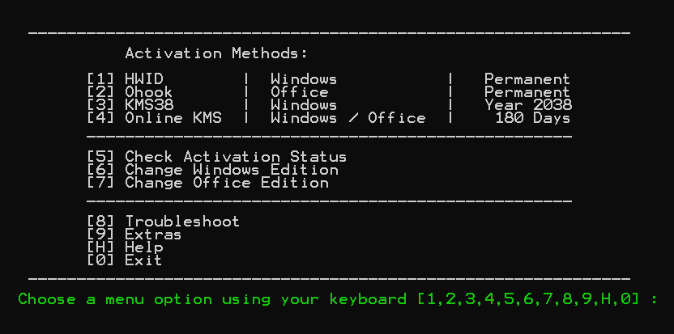
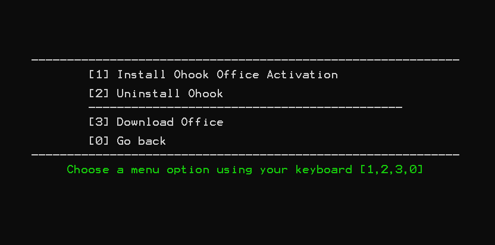
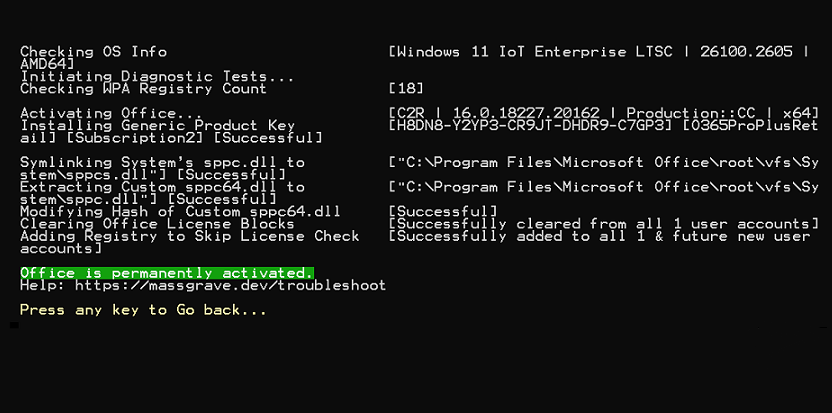

How to install Microsoft Office the right way for my poor homie
Thursday, 9th January 2025 by Kunnic
Microsoft Office, why hurting your self on those websites that has one million ads and popups just to download a software like that? No ads, no popups, no viruses, and 10~20 minutes of your time with this tutorial.
Step 1: Downloading the installer
-
Open your browser and go to https://massgrave.dev/.
-
Click on the "Download Windows/Office" in the left side of the page.
-
Scroll down a little bit, then click on the "Office C2R Installers ❤️" link.
That version is the simpliest and the fastest way to install Office if you're a noob and don't know what torrenting is or don't know what you're doing.
-
Scroll down a little bit after clicking the link, choose your language part that you're most comfortable with.
-
Choose the version that you want to install:
-
Online x64, x86 and Offline x64, x86 - If you always have internet connection, choose the online version. If you don't have internet connection all the time or bad internet connection, choose the offline version.
-
2013, 2016, 2019, 2021, 2024, 365? - Choose the version that you want to install. If you don't know what version to choose, choose 365.
-
ProPlus, Standard, Home and Business, Home and Student??? - If you have no idea what these are, choose ProPlus.
Too long didn't read: O365ProPlusRetail Online x64 is recommended
-
Click on the "Link❤️" link to download.
Done! This is the end of the first step.
Step 2: Installing Office
-
Open the installer that you've downloaded and wait for it to install.
-
After it's done installing, click Close.
Done! This is the end of the second step.
Step 3: Activating Office
-
Again, open your browser and go to https://massgrave.dev/.
-
In the "Download / How to use it?" section, copy the command there.
-
Open PowerShell by pressing the Windows key, type "PowerShell" and press Enter or right-click on the Start button and click "Windows PowerShell".
Note: You need to run PowerShell, not Command Prompt.
-
Paste the command there then press Enter.
-
After it's done, a Command Prompt window will appear. It'll look like this:

-
Press key "2" on your keyboard for Office activation. After that, it'll look like this:

-
Press key "1" on your keyboard for Office activation. After that, it'll look like this:

-
Done! You've successfully activated Office. You can press any key to go back to the menu, and press "0" to exit the program.
Now your Office is ready to use! You can open Word, Excel, PowerPoint, or any other Office apps that you've installed and press Accept the license agreement.